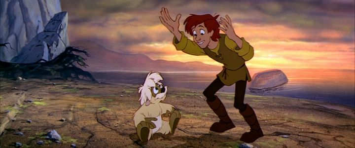

"The Black Cauldron" has long been considered Disney's black sheep movie. It was writtent to be the most expensive animated movie yet at the time, but it failed to make that money back. I didn't see it until a very late VHS release, apparantly the first home video release more than 10 years later. Despite this, I keep coming across people my age that claim to remember and enjoyed the movie, and it's become a fantasy cult classic. Disney was no stranger to medieval fantasy and fairy tales, but "The Black Cauldron" was meant to be their first true epic adventure. Based on the novel series "The Chronicles of Prydain," this was meant to be the studio's answer to "The Lord of the Rings," which had received a number of successful animated adaptions with Warner Bros and Rankin-Bass. In theory, it was an exciting venture, and Disney had proven they could combine dark themes with children's entertainment. This would be their darkest yet though, and their first with a PG rating (gasp!). Set during a dark age, the evil Horned King is searching the land for a mystical Black Cauldron, which would allow him to raise an undead army to conquer the world. Meanwhile, in a small cottage, Taran and his parental figure Dallben have been able to avoid the wars, much to Taran's dismay. Like most pre-teens, Taran dreams of action and glory, and laments that he can't join the knights and heroes in this opportune era, instead being tasked with chores on a farm, including looking after a pet pig named Hen Wen. When Taran learns that Hen Wen is no ordinary pig, and that the King could use it to predict the future and find the Cauldron, he's tasked to hide the pig to another far-off cottage. Of course, Taran daydreams and loses the pig, he's thrust headfirst into the center of the war, meeting the Horned King face to face, and running off to find and destroy the Cauldron before it's too late. Along the way, he meets allies to join him on his quest, including a princess Ellonwy, a minstrel Fflewddur, and a talking dog named Gurgi. This is an appropriately epic fantasy with interesting twists and scares and magic. There's one main problem with the movie: the lead heroes are terrible, possibly the worst of any Disney movie. Not just one or two, but ALL of them. Taran is a daydreaming brat with incredibly wooden dialogue. Ellonwy is a stuck-up princess that insists on introducing her awkward name to everyone she meets, and despite being adventurous and against type for female roles, having the movie point that out makes her feel like a step backwards. Both of them sound terrible, like American actors trying to fake British accents as children. Fflewddur is the human bumbling comic relief, and has little purpose in the group. And Gurgi is a cross between "The Lord of the Rings"' Gollum and "Star Wars"' Jar Jar Binks... despite being a key character for the conclusion, his voice grates like nails on a chalkboard. I hate all of them.  But the character archtypes are not unusual for fantasy adventures. They could have been good, or at least bearable. Their failure is entirely on their writing, dialogue and acting. Beyond them, the adventure and it's story are actually pretty good, and it's fair that fans exist for the picture. Infamously, about 12 minutes are rumored to be cut from the original finished copy of the movie, to reduce the runtime and remove some scenes that were deemed too scary for young children during early screening tests. I'd be fun to see thoses deleted scenes, but I can't imagine they'd fix much, as the core story wasn't the problem. The production quality is ambitious, as seen by the ultra-wide aspect ratio of the movie. There's a certain level of care in the art and design, although I though the character designs for some of the leads (Teran, mainly) were too simple and generic. The animation is also a little off for some of the hoards of adult guards that serve the King, not as smooth as one would expect from Disney (by this point, most of the old animators had retired, and the younger artists probably weren't up to the task yet). Appropriately, this isn't a musical, but the score stays mainly in the background unnoticed. It's fair to say that "The Black Cauldron" is one of the worser Disney movies, but that's almost exclusively due to poor choices regarding the lead characters. There's a lot of other things to like, like a promising story and solid direction, and for such an ambitious project, it's a shame it didn't come out better.
- "Ani" More reviews can be found at : https://2danicritic.github.io/ Previous review: review_The_Big_Bad_Fox_and_Other_Tales Next review: review_The_Bob's_Burgers_Movie